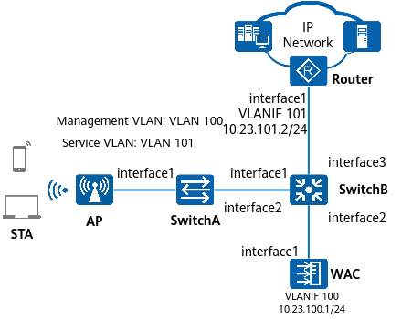
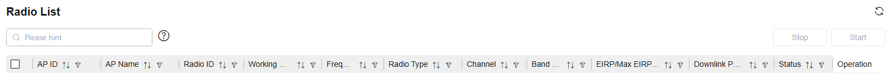
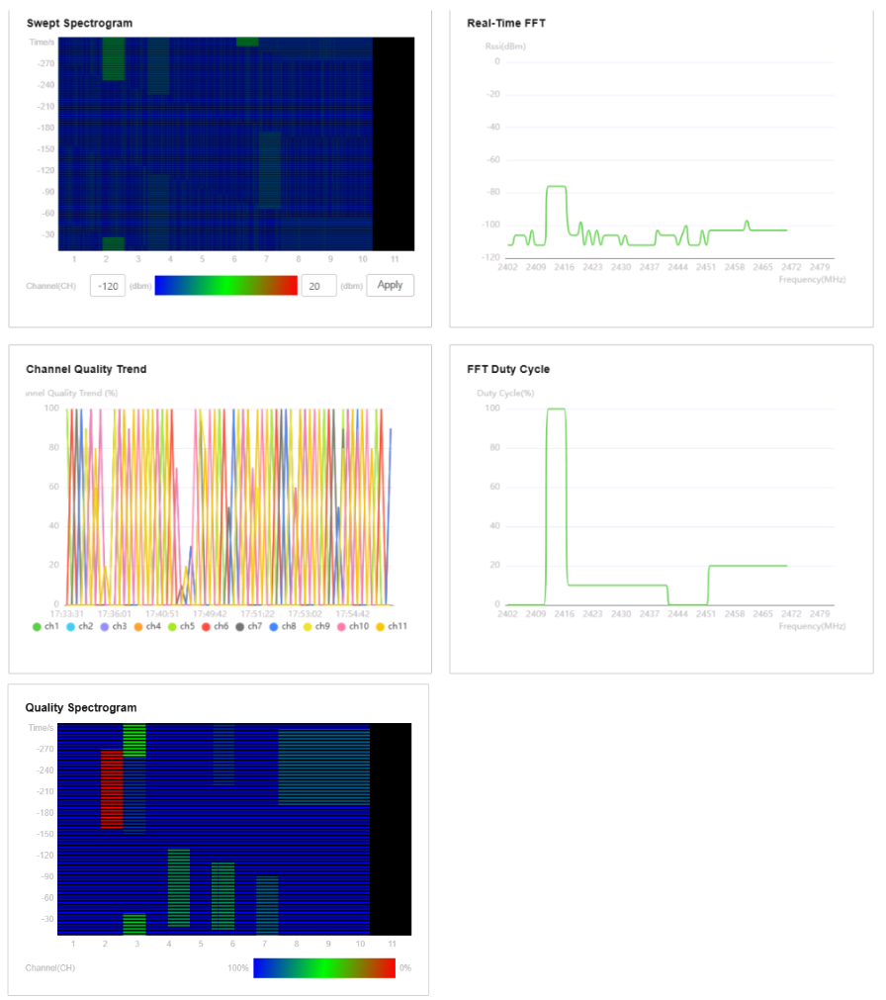

Example for Configuring WLAN Spectrum Analysis
Service Requirements
An enterprise wants to enable users to access the network through WLANs, meeting the basic mobile office requirements. Additionally, the WLAN is required to ensure continuous services during STA roaming in the coverage area. The enterprise is located in an open area, making the WLAN vulnerable to interference. When discovering severe interference on the WLAN, the network administrator can detect whether non-Wi-Fi interference exists on the WLAN through the spectrum analysis function.
For details about how to configure wireless network access, see Related Topics.
Networking Requirements

In this example, interface1, interface2, and interface3 represent 10GE0/0/1, 10GE0/0/2, and 10GE0/0/3, respectively.

After a spectrum server is deployed on the network, APs report the spectrum scanning and sampling data to the spectrum server through the WAC. Ensure that the network connection between the WAC and the spectrum server is normal.
Data Planning
Item |
Data |
|---|---|
AP group |
|
Air scan profile |
|
2.4 GHz radio profile |
|
5 GHz radio profile |
|
AP system profile |
|
Context
After spectrum analysis is configured, APs can detect non-Wi-Fi devices and send alarms to the WAC.
Precautions
- If any function related to air scan (such as spectrum analysis) is enabled on a radio working in normal mode, the radio transmits common WLAN services and also provides the monitoring function. WLAN services may encounter a transient increase in latency during a radio scanning period, which does not affect network access. However, if any latency-sensitive services (such as videoconferencing) are running, it is recommended that a separate radio be used for scanning.
When spectrum analysis is used, the air scan interval range of 3s to 10s and the air scan period of 100 ms are recommended. This helps you obtain sufficient sampled data without compromising normal services.
- The channels to be scanned for spectrum analysis are fixed as all channels supported by the corresponding country code of an AP and are irrelevant to the configuration in an air scan profile.
- No ACK mechanism is available for multicast packet transmission over unstable wireless links of air interfaces. For this reason, multicast packets are usually sent at low rates to ensure stable transmission. However, if a large number of multicast packets are sent from the network side, air interfaces may be congested. Therefore, you are advised to configure multicast packet suppression to reduce the impact of numerous low-rate multicast packets on the wireless network. Exercise caution when configuring the rate limit if there are multicast services on the network, as this may affect the multicast services.
Configure multicast packet suppression on interfaces directly connecting the device to APs.
For details on how to configure traffic suppression, see How Do I Configure Multicast Packet Suppression to Reduce Impact of a Large Number of Low-Rate Multicast Packets on the Wireless Network?
- The port isolation configuration is recommended on the ports of the device directly connected to APs. If port isolation is not configured and direct forwarding is used, a large number of unnecessary broadcast packets may be generated in the VLAN, blocking the network and degrading user experience.
Procedure
- Check basic WLAN configurations.
Item
Command
Data
AP group to which an AP belongs
display ap all
AP group: ap-group1
All profiles bound to the AP group
display ap-group name ap-group1
VAP profile: wlan-net
All profiles bound to the VAP profile
display vap-profile name wlan-net
SSID profile: wlan-net
- Configure spectrum analysis.
# Create the AP system profile wlan-spectrum and configure spectrum server information.
<WAC> system-view [WAC] wlan [WAC-wlan] ap-system-profile name wlan-spectrum [WAC-wlan-ap-system-prof-wlan-spectrum] spectrum-analysis server ip-address 10.137.43.4 port 27371 via-ac ac-port 5001 [WAC-wlan-ap-system-prof-wlan-spectrum] quit
# Create the air scan profile wlan-airscan, and configure the scan interval and scan period.
[WAC-wlan] air-scan-profile name wlan-airscan [WAC-wlan-air-scan-prof-wlan-airscan] scan-period 100 [WAC-wlan-air-scan-prof-wlan-airscan] scan-interval 8000 [WAC-wlan-air-scan-prof-wlan-airscan] quit
# Create the 2.4 GHz radio profile wlan-radio2.4g and bind the air scan profile wlan-airscan to the 2.4 GHz radio profile.
[WAC-wlan] radio-2g-profile name wlan-radio2.4g [WAC-wlan-radio-2g-prof-wlan-radio2g] air-scan-profile wlan-airscan [WAC-wlan-radio-2g-prof-wlan-radio2g] quit
# Create the 5 GHz radio profile wlan-radio5g and bind the air scan profile wlan-airscan to the 5 GHz radio profile.
[WAC-wlan] radio-5g-profile name wlan-radio5g [WAC-wlan-radio-5g-prof-wlan-radio5g] air-scan-profile wlan-airscan [WAC-wlan-radio-5g-prof-wlan-radio5g] quit
# Bind the 5 GHz radio profile wlan-radio5g and 2.4 GHz radio profile wlan-radio2.4g to the AP group ap-group1.
[WAC-wlan] ap-group name ap-group1 [WAC-wlan-ap-group-ap-group1] radio-5g-profile wlan-radio5g radio 1 Warning: This action may cause service interruption. Continue?[Y/N]y [WAC-wlan-ap-group-ap-group1] radio-2g-profile wlan-radio2.4g radio 0 Warning: This action may cause service interruption. Continue?[Y/N]y [WAC-wlan-ap-group-ap-group1] quit
# Bind the AP system profile wlan-spectrum to the AP group ap-group1, and enable spectrum analysis in the AP group.
[WAC-wlan] ap-group name ap-group1 [WAC-wlan-ap-group-ap-group1] ap-system-profile wlan-spectrum [WAC-wlan-ap-group-ap-group1] radio 0 [WAC-wlan-ap-group-ap-group1-radio-0] spectrum-analysis enable [WAC-wlan-ap-group-ap-group1-radio-0] quit [WAC-wlan-ap-group-ap-group1] radio 1 [WAC-wlan-ap-group-ap-group1-radio-1] spectrum-analysis enable [WAC-wlan-ap-group-ap-group1-radio-1] quit [WAC-wlan-ap-group-ap-group1] quit
# Enable spectrum analysis data reporting on AP radios. The spectrum server performs spectrum analysis and draws spectrum graphs based on the data reported by the APs.
[WAC-wlan] ap-id 0 [HUAWEI-wlan-ap-0] radio 0 [HUAWEI-wlan-ap-0-radio-0] spectrum-report enable [HUAWEI-wlan-ap-0-radio-0] quit [HUAWEI-wlan-ap-0] radio 1 [HUAWEI-wlan-ap-0-radio-1] spectrum-report enable
# Disable spectrum analysis data reporting on AP radios when the function is no longer required.
[WAC-wlan] ap-id 0 [HUAWEI-wlan-ap-0] radio 0 [HUAWEI-wlan-ap-0-radio-0] undo spectrum-report enable [HUAWEI-wlan-ap-0-radio-0] quit [HUAWEI-wlan-ap-0] radio 1 [HUAWEI-wlan-ap-0-radio-1] undo spectrum-report enable
Verifying the Configuration
# Run the display ap-system-profile name wlan-spectrum command on the WAC to check the spectrum analysis configuration.
[WAC-wlan] display ap-system-profile name wlan-spectrum ------------------------------------------------------------------------------ ... AP report to : AC Server IP : 10.137.43.4 Server port : 27371 AC port : 5001 Device aging-time(minute) : 3 ... ------------------------------------------------------------------------------
# Run the display spectrum-analysis server-reporter command on the WAC to check the APs that report spectrum packets to the spectrum server.
[WAC-wlan] display spectrum-analysis server-reporter Total: 2 ------------------------------------------------------------ ID AP name Radio ID ------------------------------------------------------------ 1 area_1 0 1 area_1 1 ------------------------------------------------------------
Choose . The Radio List page is displayed.
Figure 2 Radio list
Select an AP radio and click Start.
In the AP radio list, click View Drawing in the Operation column. In the displayed dialog box, you can view the spectrum graph. A maximum of five spectrum graphs can be displayed.
Figure 3 Spectrum graph
- The real-time FFT chart shows that the signal strength of interference is mostly within the range of –120 dBm to –60 dBm. On the swept spectrogram chart, set the signal strength scope at both ends of the color bar, and click Apply. The swept spectrogram chart also shows the channels with severe interference.
Configuring Scripts
# sysname WAC # wlan air-scan-profile name wlan-airscan scan-period 100 scan-interval 8000 radio-2g-profile name wlan-radio2.4g air-scan-profile wlan-airscan radio-5g-profile name wlan-radio5g air-scan-profile wlan-airscan ap-system-profile name wlan-spectrum spectrum-analysis server ip-address 10.137.43.4 port 27371 via-ac ac-port 5001 ap-group name ap-group1 ap-system-profile wlan-spectrum radio 0 radio-2g-profile wlan-radio2.4g vap-profile wlan-net wlan 1 spectrum-analysis enable radio 1 radio-5g-profile wlan-radio5g vap-profile wlan-net wlan 1 spectrum-analysis enable ap-id 0 type-id 216 ap-mac 00e0-fcde-f820 ap-sn 21500871354EQ4000074 radio 0 spectrum-report enable radio 1 spectrum-report enable # return